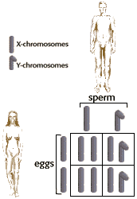

Web
Karyotyping
(en
Español) Play the role of a cytogenetic technician
and complete three patient karyotypes, then evaluate and diagnose
each patient. For classroom use, teachers can download a printable
Student Worksheet
(requires Adobe
Acrobat Reader).
New
Methods in Karyotyping Learn about this exciting new technique
for diagnosing chromosomal abnormalities.
The
Blackett Family DNA Activity Use this family study to learn
the concepts and techniques behind DNA profiling , interpret
DNA autoradiograms, and evaluate DNA profiles to determine familial
relationships
The
Blackett Family DNA Activity 2
Use real Short Tandem Repeat (STR) DNA profiles to solve paternity
and missing person cases in this inquiry-based activity.
|

Genetics
Blood
Types ( en
Español) Learn about the inheritance of blood types
and Rh factors while attempting to answer real questions received
from people who had concerns about the blood types of their
parents or about the father of their child or grandchild.
Color
Blindness Establish the pedigree of a family to see
how the red-green color perception defect is passed on from
one generation to the next.
Human
Genetics Apply your knowledge of Mendelian Genetics
to humans, and learn about constructing pedigrees, mapping chromosomes,
and genetic disorders and much more.
DNA
Forensics 1 Learn about the Restriction Fragment
Length Polymorphism (RFLP) method to characterize human DNA
samples as applied in paternity analysis and sex crimes investigations.
DNA
Forensics 2 Explore this topic in more detail, and
interpret actual case results as might be produced by the FBI
laboratory or a commercial, paternity-testing facility.
Sex & Reproduction
Human
Reproduction Understand the basics of male and female
reproductive anatomy, hormones, fertilization, and also AIDS.
Birth
Control Introduce yourself to the birth control methods
available in the United States, how they work, and how effective
they are in preventing pregnancy.
Sexually
Transmitted Diseases Learn about the most common
contemporary sexually transmitted diseases, their symptoms,
modes of transmission, and treatment.

University
of Arizona, Campus Health Service Quality care for
the mind, body, and spirit. A site rich with information on several
health issues including health and wellness, women's health, sexual
health, nutrition and eating issues, and many other interesting
topics.
Centers for Disease
Control and Prevention (CDC): The Nation's Prevention
Agency. U.S. public health agency presents information on specific
diseases, prevention guidelines, scientific data and funding
information.
HealthlinksUSA:
Free links to 1,000's of health sites, 100's of health topics,
featuring treatment, diagnosis, prevention, risk factors, support
groups, email lists, personal stories, etc.
Seeing,
Hearing and Smelling the World: New Findings Help Scientists
Make Sense of Our Senses is a colorful, animated
website, with articles and illustrations. Topics include illusions,
colors, deafness, brain scans, and smell, as well as a useful
glossary.
WebPath:The
Internet Pathology Laboratory for Medical Education
is an electronic laboratory that includes over 1800 images along
with text and tutorials that demonstrate gross and microscopic
pathologic findings associated with human disease states. Not
for the squeamish.
The
Visible Human Project is creating complete, anatomically
detailed, three-dimensional representations of the male and
female human body. The current phase of the project is collecting
transverse CT, MRI and cryosection images of representative
male and female cadavers at one millimeter intervals.
The
Heart: An Online Exploration created by the Franklin
Institute Science Museum, is a thorough, well illustrated and
animated guide to the human heart.
|